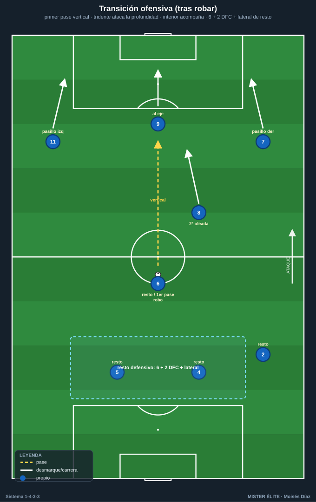
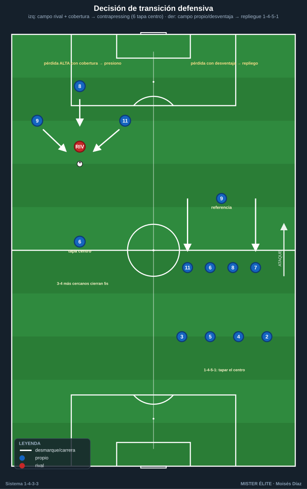
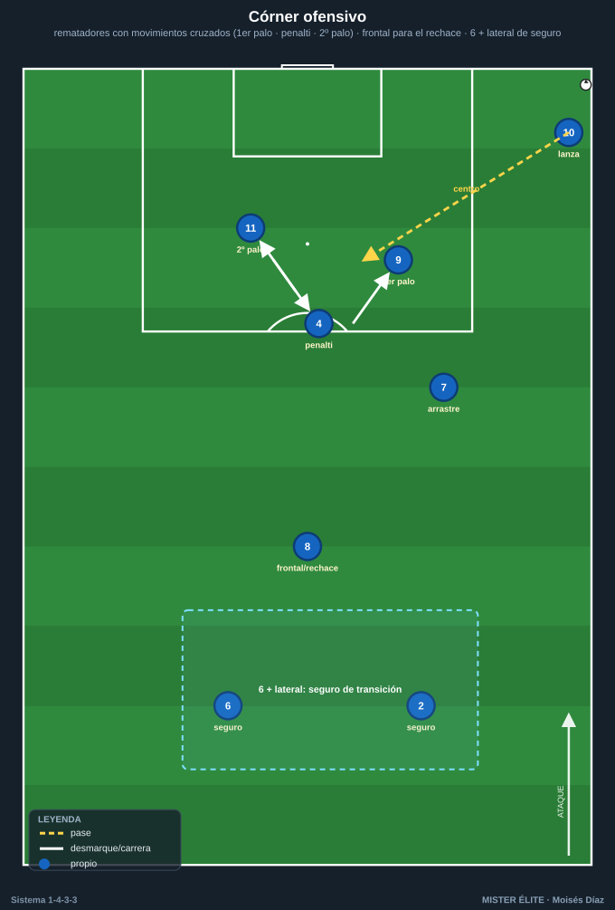

Módulo 04 · Transiciones y balón parado del 1-4-3-3
Nomenclatura: POR 1 · LD 2 · LI 3 · DFC 4/5 · pivote 6 · interiores 8/10 · ED 7 · DC 9 · EI 11.
Las transiciones deciden partidos. El 1-4-3-3 está entre las mejores estructuras para ellas por su densidad central y triángulos cortos (mucha gente cerca del balón al ganarlo o perderlo). La clave es decidir bien en 3-5 segundos.
1. Transición ofensiva (tras recuperar)
- Verticalidad inmediata: primer pase hacia delante para atacar la defensa rival desorganizada antes de que se reordene.
- Salidas de contraataque: el tridente (7-9-11) corre los espacios — el 9 ataca la profundidad central, los extremos los pasillos exteriores. Los interiores (8/10) acompañan como segunda oleada y como apoyo si el contra se frena.
- Regla de equilibrio: 3-4 jugadores se proyectan; el 6 + 2 centrales + 1 lateral quedan como resto defensivo por si se pierde.

2. Transición defensiva (tras perder)
Dos respuestas según zona de pérdida y número de jugadores adelantados:
- Contrapressing inmediato (gegenpressing): si se pierde en campo rival con muchos efectivos arriba, presión de los 3-4 más cercanos durante los primeros segundos para recuperar o forzar pase malo. El 6 cubre el carril central evitando el pase de progresión.
- Repliegue a 1-4-5-1: si no hay opción de robo inmediato, los extremos 7/11 bajan a la línea de medios (1-4-5-1 / 1-4-1-4-1), el 6 frena el balón en el eje y la línea de 4 se reordena compacta. Prioridad: tapar el centro y obligar a jugar por fuera.
- Disparador de elección: posición del balón + jugadores por detrás del balón. Pérdida alta con cobertura → presiono; pérdida con desequilibrio numérico → repliego.

3. Balón parado
Ofensivo
- Córners: rematadores altos (DFC 4/5, DC 9) con movimientos cruzados (bloqueos legales); uno al primer palo (desvío), otro al segundo; arrastre al primer palo para liberar el penalti. Resto en la frontal (interior/extremo) para el rechace y dos atrás (6 + lateral) como seguro de transición.
- Faltas laterales: mismo principio de centro que el juego abierto (primer palo / penalti / segundo palo).
- Faltas directas frontales: lanzador zurdo/diestro según el palo; muro de 4-5; acecho al rechace.
- Saques de banda en campo rival: triángulos de apoyo en el tercio de banda (extremo-lateral-interior) para mantener posesión y evitar la pérdida que genera transición.

Defensivo
- Sistema mixto: zona en el primer palo + marca al hombre a los rematadores.
- El 6 defiende la frontal / rechace.
- Dos arriba (9 + extremo) como referencia de contra al despejar.
Ideas clave
- Decidir la transición en 3-5 s: cobertura presente → contrapressing; desequilibrio → repliegue a 1-4-5-1.
- En transición ofensiva, primer pase vertical y el tridente ataca de inmediato; conserva el resto defensivo.
- El 6 es el primer freno en transición defensiva: tapa el centro, no persigue.
- En ABP ofensivo, ocupar tres alturas + frontal y dejar dos atrás de seguro.
Errores comunes
- Jugar hacia atrás tras robar y perder la ventaja de la transición.
- Proyectar a todos sin resto defensivo y morir en la contra rival.
- Que el 6 salte a presionar en la transición defensiva en vez de tapar el centro.
- Contrapressing mal elegido (presionar en desventaja numérica dejando espacios atrás).
- Atacar el córner sin seguro de transición (6 + lateral): contras letales tras el despeje.